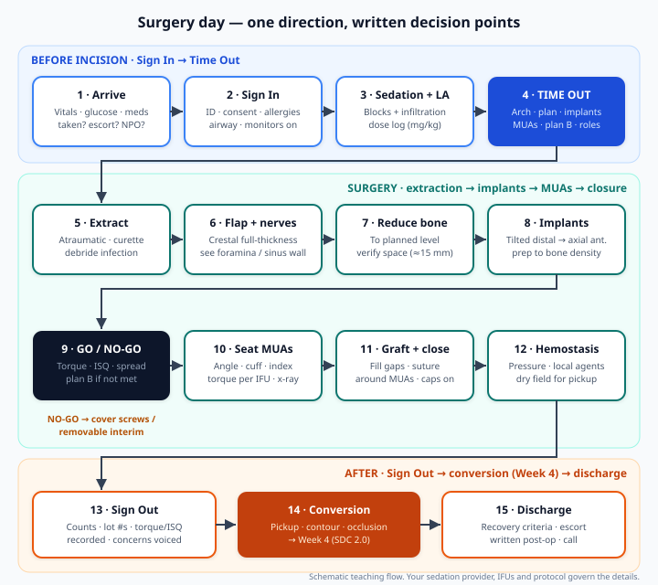
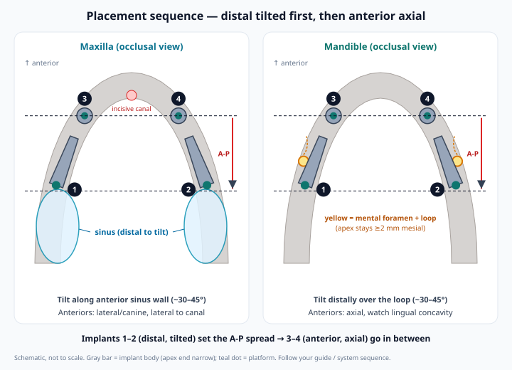
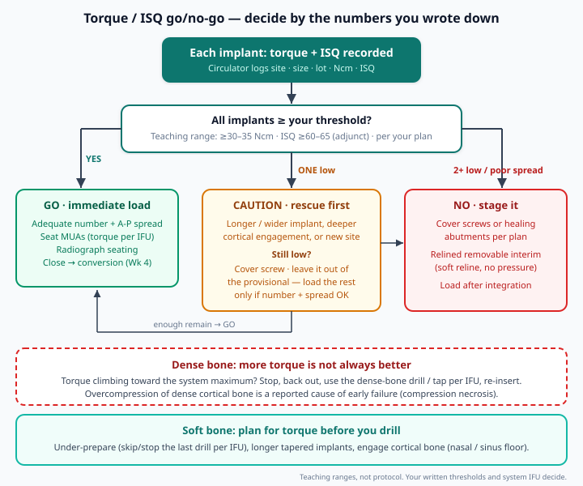
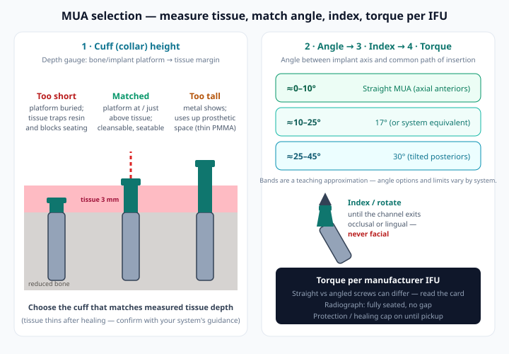

1 Learning objectives
By the end of Week 3 you should be able to:
- Run the day-before and morning-of checks and a three-phase surgical safety checklist (Sign In · Time Out · Sign Out) with your team.
- Anesthetize a full arch, extract atraumatically and debride infected sockets before any implant goes in.
- Raise a crestal full-thickness flap, see the mental foramina / sinus landmarks, and reduce bone to the planned level while verifying prosthetic space.
- Place distal tilted and anterior axial implants in sequence, preparing the osteotomy to the bone you actually find (under-prep soft, protect dense).
- Make the immediate-load vs staging call from torque/ISQ numbers and execute plan B without improvising.
- Select, index and seat MUAs (torque per IFU), graft and close around them, control bleeding, and hand a clean, documented field to the conversion.
2 Surgery-day flow & timeline

Example first-case schedule
| Block | What happens | Typical time (first cases, single arch) |
|---|---|---|
| Arrival & Sign In | Vitals, glucose, consent re-check, monitors, IV/sedation | 30–45 min |
| Local + Time Out | Blocks/infiltration; team confirms arch, plan, components, plan B | 10–20 min |
| Extraction → closure | Steps 5–12 in Figure 1 | 90–180 min |
| Conversion (Week 4) | Pickup, contour, polish, occlusion | 60–120 min |
| Recovery & discharge | Recovery criteria, written instructions, escort | 30–60 min |
Times are illustrative planning numbers for a learning surgeon, not benchmarks. Book the whole day for your first case — the clock is the most common reason people skip a check.
3 Day-before & morning-of checklist
Day before (T-1)
| Area | Check |
|---|---|
| Consent | Signed and witnessed: procedure, sedation, nerve/sinus/bleeding risks, plan B (may leave with a removable interim), financial. Questions answered on the phone, not in the chair. |
| Medical / meds (from your Week 2 risk review) | Anticoagulant/antiplatelet plan agreed with the prescriber; diabetic plan (morning slot, medication adjustment per physician); antiresorptive status re-confirmed; any premedication (antibiotic prophylaxis per your protocol, endocarditis prophylaxis only if indicated by current AHA/ADA guidance, anxiolytic per sedation provider) prescribed and filled. |
| Sedation readiness | Provider confirmed; NPO and escort instructions given; emergency cart, O2, suction (plus backup), AED, reversal agents, capnography/pulse oximetry/BP monitors checked and logged (ADA 2016). |
| Guides & prosthesis | Base/reduction/implant/prosthetic guides test-fitted on the printed model; fixation pins and pin drill present; conversion denture or printed provisional, bite registration and duplicate on hand. |
| Implant inventory | Every planned implant plus a longer and a wider backup for each zone; cover screws; motor with torque readout; ISQ device charged with the correct pegs. |
| MUA inventory | Each planned angle and cuff height plus spares; MUA carriers/drivers, torque wrench, angle-measuring/try-in tools, protection/healing caps, temporary cylinders, prosthetic screws. |
| Sterilization | Surgical and prosthetic kits processed and indicator-verified; bone-reduction burs sharp. |
| Team briefing | 15-minute huddle: sequence, who opens what, who records torque/ISQ and lot numbers, plan B triggers, emergency roles (who calls 911, who brings the cart). |
Morning of
- ☐ Patient: NPO and escort confirmed, usual meds taken/held as instructed, premedication taken, BP/HR/SpO2, glucose for diabetics, pre-op photos.
- ☐ Plan printed and posted: teeth to extract (by number), implant sites/sizes/angles, MUA angle + cuff per site, torque/ISQ thresholds, plan B.
- ☐ CBCT and planning software open on the operatory screen.
- ☐ Tray laid out in the order of the day (extraction → reduction → implant → prosthetic); components staged by site but not opened until called.
- ☐ Chilled sterile saline irrigation, suction and backup suction, radiograph sensor ready.
- ☐ Pre-procedural chlorhexidine rinse per your protocol.
4 Surgical time-out (WHO checklist, adapted)
The WHO Surgical Safety Checklist runs in three pauses: Sign In (before anesthesia/sedation), Time Out (before incision) and Sign Out (before the patient leaves). In the WHO pilot across eight hospitals, introducing the 19-item checklist was associated with deaths falling from 1.5% to 0.8% and inpatient complications from 11.0% to 7.0% (Haynes 2009). That was hospital, non-cardiac surgery — but the mechanism (team communication, nothing assumed) transfers directly to a long office case.
| Pause | Full-arch adaptation — say it out loud |
|---|---|
| Sign In (before sedation / local) | Patient identity · procedure and arch · consent incl. plan B · allergies · airway/aspiration risk · anticoagulant and glucose status · sedation drugs and monitors checked and working · premedication taken |
| Time Out (before the first extraction / incision) | Team names and roles · teeth to extract by number · planned implant sites, sizes, tilt · MUA angles/cuffs · all components present · imaging displayed · antibiotic given per protocol · anticipated critical events (nerve, sinus, lingual concavity, bleeding) · torque/ISQ thresholds and plan B stated · sterility confirmed |
| Sign Out (before handoff to conversion / leaving the chair) | Implants and MUAs recorded with lot numbers, torque and ISQ · radiograph taken and reviewed · counts (gauze, needles, drills, guide pins removed) · intraoperative events documented · plan for conversion and recovery agreed · key concerns for recovery voiced |
Source document (external)
WHO — Implementation manual, WHO Surgical Safety Checklist 2009 (Safe Surgery Saves Lives), including the checklist and guidance on adapting it locally.
Open WHO manual5 Anesthesia & full-arch local technique
Sedation is run by the provider you planned in Week 2. Your job is profound, long-lasting local anesthesia, within dose limits, that also helps hemostasis.
| Arch | Typical approach | Notes |
|---|---|---|
| Maxilla | Buccal infiltrations canine eminence → tuberosity (± PSA, infraorbital); greater palatine and nasopalatine blocks or palatal infiltrations | Palatal tissue is where the flap and sutures hurt most post-op — anesthetize it well |
| Mandible | Bilateral IAN + long buccal blocks, or infiltration-based technique; mental/incisive infiltration; cautious lingual infiltration anteriorly | Bilateral blocks numb the tongue — warn the patient; the conversion occlusion check is harder with a numb, sedated patient |
- Dose log: calculate maximum dose by weight for each agent before you start; the assistant logs every cartridge. Long cases tempt "one more carpule" — the log decides.
- Vasoconstrictor improves the field and reduces blood loss; respect cardiac limits from the medical review.
- Re-dosing: a 3–5 h day outlasts short-acting agents — plan re-injection before the conversion and a long-acting agent at the end if your protocol uses one.
- Don't rely on the patient to warn you about the nerve. Some clinicians use infiltration instead of IAN blocks so a patient can report proximity, but under sedation that signal is unreliable. Your protection is the CBCT margin (≥2 mm, Week 2) and visual identification of the foramen.
6 Atraumatic extraction & socket debridement
Extract to protect the bone you will use
- Section multi-rooted teeth; periotomes and luxators before forceps. The buccal plate at planned implant sites is worth more than 30 seconds saved.
- Sequence with your guide workflow: some stackable systems fix the base guide using teeth or tooth-borne indexing first and extract afterwards — follow the guide's protocol.
- Remove all root fragments, failing restorations, implants planned for removal and debris.
Debride every socket — infection is removed, not covered
- Curette granulation tissue, cyst lining and residual PDL to clean bleeding bone; a round bur helps in chronic periapical lesions.
- Irrigate copiously with sterile saline. Many protocols add a chlorhexidine rinse.
- Reduction removes much of the crestal socket — but apical lesions below the reduction level stay. Find them on the CBCT and debride them specifically.
A systematic review of immediate implants placed into sites with endodontic or periodontal lesions found high survival in several studies provided meticulous cleaning, socket curettage/debridement and chlorhexidine rinsing were performed first; the added benefit of antibiotic irrigation or systemic antibiotics in this setting was unproven (Chrcanovic 2015).
7 Flap design, exposure & nerve identification
Incision and reflection
- Mid-crestal incision splitting the keratinized tissue so both buccal and lingual/palatal flaps carry keratinized tissue to the future MUAs; extend from tuberosity/retromolar area to the contralateral side, sulcular around remaining teeth.
- Full-thickness reflection wide enough to see buccal concavities and seat a bone-borne guide.
- Releasing incisions only where needed, away from danger: in the mandible keep them well clear of the mental foramina; in the maxilla avoid palatal releasing incisions in the greater palatine region.
- Tie-back or retraction sutures keep flaps out of the reduction bur's path.
See the anatomy you planned around
| Landmark | How to identify | Why |
|---|---|---|
| Mental foramen (both sides) | Blunt dissection with the elevator on bone in the premolar region until the nerve is seen exiting; protect it with a retractor | Distal tilted implants sit mesial to it; anterior loop length varies — measure on CBCT, don't assume (Greenstein & Tarnow 2006) |
| Lingual contour (anterior mandible) | Reflect and palpate the lingual plate; keep a finger on it while drilling | Lingual perforation can injure sublingual/submental vessels → floor-of-mouth hemorrhage (Kalpidis 2004) |
| Anterior sinus wall | CBCT measurements from a fixed landmark, the guide, or a small exploratory window/probe per surgeon preference | The distal maxillary implant tracks along it |
| Nasal floor / piriform rim, incisive canal | Palpation and CBCT reference | Anterior implant length and position |
8 Bone reduction to the planned level
Week 2 decided how much and why. Today you transfer that number to bone — and check it before a single osteotomy.
| Guided | Freehand |
|---|---|
| Seat the base/reduction guide on bone; confirm it is fully seated (no rocking, check windows) before pinning; place fixation pins in planned positions; reduce to the guide surface | Record reference measurements from a fixed landmark before extraction (e.g., planned incisal edge via denture/putty index); mark depth with bur dots; reduce; re-measure in each zone |
| A seating error propagates to every stacked layer — static-guide error is real even when seated well (Tahmaseb 2018) | Easy to under- or over-reduce posteriorly; measure anterior and posterior separately |
Technique
- Large barrel/round carbide or reduction bur under copious irrigation; piezo near nerve or sinus if you use it.
- Leave a flat, even platform wide enough to house each implant with bone around it; round off sharp lingual/buccal edges.
- Collect reduced bone (bone trap) — it is your graft for socket gaps later.
Verify prosthetic space before you drill
- Measure from the reduced bone to the planned occlusal plane with the denture, prosthetic guide or a bite at the planned vertical dimension — target your lab's number (≈15 mm for a hybrid, Week 2).
- Confirm the transition line will sit where the plan put it (behind the lip at full smile).
- Short on space? Reduce more now. Discovering 11 mm during the conversion means a thin, fracture-prone provisional.
9 Osteotomy & placement sequence

Positions (zygoma-free, graftless concept)
- Maxilla: distal implants tilted (~30–45°) along the anterior sinus wall, platform near the second premolar, apex in the canine/first-premolar region; anterior implants axial in the lateral incisor–canine region, lateral to the incisive canal, engaging nasal-floor cortex without perforating (Maló 2005; Testori 2008).
- Mandible: distal implants anterior to the mental foramen, tilted distally over the loop with the apex ≥2 mm mesial to it; anterior implants axial, drilled with a finger on the lingual plate (Maló 2003).
- Tilted and axial implants performed similarly in immediately loaded full-arch cohorts and reviews — 1-year survival 98.4% (maxilla) and 99.7% (mandible) in 154 prostheses with no marginal-bone difference between axial and tilted implants (Agliardi 2010); 1.25% failures across 1,992 implants with no tilted vs upright difference (Del Fabbro 2012).
Osteotomy — prepare for the bone you find
| Bone feel | Preparation | Why |
|---|---|---|
| Soft (posterior maxilla, D3–D4) | Under-prepare: stop one drill short / skip the cortical drill per IFU; longer, tapered, aggressive-thread implant; engage cortical bone (nasal or sinus floor) where safe | Undersized preparation raised insertion and removal torque in low-density bone models (Tabassum 2009); primary stability depends on bone density, implant design and surgical technique (Javed & Romanos 2010) |
| Medium (D2–D3) | Standard sequence per IFU | Most anterior maxilla and mandible sites |
| Dense (anterior mandible, D1) | Full sequence + dense-bone drill / countersink / tap per IFU; generous irrigation; never exceed the system's maximum insertion torque | Overcompressed dense bone can necrose and fail early (Bashutski 2009) |
- Pilot → sequential drills at IFU speeds; check depth and direction with gauges and indicators against the plan after the pilot.
- Seat the platform at the planned vertical level (for tilted implants, the distal platform edge at bone level; subcrestal only if the system is designed for it).
- The circulator records site, size, lot number, final insertion torque and ISQ for every implant as it goes in.
10 Torque / ISQ go/no-go & plan B

- Insertion torque (final seating value) of about ≥30–35 Ncm per implant is the usual inclusion threshold in immediate-load full-arch studies (Gallucci 2014; Papaspyridakos 2014; Morton 2018).
- ISQ from resonance frequency analysis is an adjunct (commonly ≥60–65); readings depend on bone, implant length/diameter and where and how the peg is measured, so record them the same way every time (Sennerby & Meredith 2008).
- Cross-arch splinting with a rigid provisional distributes load — it does not rescue an implant that spins.
Plan B — execute, don't negotiate
- One implant low: rescue (longer/wider implant, deeper cortical engagement, or a new site if the plan allows). Still low → cover screw, leave it out of the provisional, and load the rest only if number and A-P spread remain adequate.
- Two or more low, or spread inadequate: stage. Cover screws or healing abutments per plan, close, deliver the converted/immediate denture as a relieved, soft-relined removable interim; load after integration.
- Guide won't seat or anatomy differs from the plan: pre-planned freehand protocol, or stop and stage.
11 MUA selection & seating

Sequence at each site
- Measure tissue depth with the system's depth gauge (implant platform to the margin of the flap as it will lie when sutured) → choose the cuff that puts the MUA platform at or just above the tissue.
- Choose the angle: straight for axial anteriors; 17° or 30° (system-specific options) for tilted implants, confirmed with try-in/angle-measuring tools against the plan.
- Clear bone that blocks full seating — especially the mesial crest over a tilted implant (bone profiler per system).
- Index/rotate angled MUAs so the screw channel exits occlusal or lingual, never facial, and all channels share a path.
- Torque per manufacturer IFU — straight and angled MUA screws often have different values. Hand-seat first, then the torque wrench.
- Radiograph each interface (beam perpendicular to the junction) — no gap before anything else happens.
- Protection or healing caps on during closure and until the pickup.
12 Grafting, closure & hemostasis
Graft the gaps
- Fill residual socket defects and gaps around implants with autogenous bone collected during reduction (± particulate graft; PRF optional per preference).
- Keep graft away from the MUA–prosthesis interface — it is the pickup zone in Week 4.
Close around the MUAs
- Thin and trim excess flap tissue so it adapts to the MUA collars without covering the platforms.
- Keep keratinized tissue buccal and lingual/palatal to each MUA.
- Tension-free interrupted and/or horizontal mattress sutures between MUAs; resorbable or PTFE per preference.
- Tissue must not be trapped under protection caps or, later, under the prosthesis.
Hemostasis — a dry field before conversion
- Firm gauze pressure first; local anesthetic with vasoconstrictor at bleeding margins.
- Local hemostatic agents (collagen, oxidized cellulose) in sockets; bone wax or burnishing for intraosseous bleeders; sutures for soft-tissue bleeders.
- Tranexamic acid (mouthwash or soaked gauze) as agreed in the Week 2 anticoagulant plan.
- Blood contaminates pickup resin and hides MUA seating — don't start the conversion in a wet field.
13 Post-op instructions & handoff to conversion
Handoff to the conversion (Sign Out → Week 4)
- ☐ Implant map: site, size, lot, torque, ISQ · MUA angle, cuff, torque · radiograph reviewed
- ☐ Decision recorded: immediate load (all/selected implants) or staged
- ☐ Intraoperative events (sinus perforation, nerve proximity, plate fracture) noted for the conversion lead and the chart
- ☐ Protection caps on, field dry, sutures clear of MUA platforms
- ☐ Sedation status: can the patient close reproducibly for the occlusion check?
Written post-op instructions (patient and escort)
| Topic | Typical instruction (adapt to your protocol) |
|---|---|
| Swelling & bleeding | Ice on/off for the first 24–48 h, head elevated; swelling peaks around day 2–3; oozing is normal, steady bleeding is a call |
| Medications | As prescribed: analgesics (multimodal where appropriate), antibiotic and steroid only if part of your protocol, antimicrobial rinse; never adjust anticoagulants without the prescriber |
| Diet | Liquids/very soft first days, then a soft, no-heavy-chewing diet for the integration period (commonly ~8–12 weeks); no biting with the front teeth or chewing on the cantilevers |
| Hygiene | Gentle rinsing from the next day; no water-flossers or brushing on the sutures until cleared; don't try to remove the teeth |
| Sinus (if perforated) | No nose blowing, sneeze with mouth open, no straws; decongestant/antibiotic per your protocol |
| Habits | No smoking/vaping; no strenuous exercise for several days |
| Call immediately / ER | Difficulty breathing or swallowing, floor-of-mouth swelling, uncontrolled bleeding, fever, numbness that persists after local anesthesia wears off, a loose or cracked prosthesis |
Antibiotics — what the evidence says: the 2026 Cochrane update (15 RCTs, implant placement without bone augmentation) found antibiotic prophylaxis probably reduces early implant failures (RR 0.34; NNT ≈ 19), mostly from a single oral 2 g amoxicillin dose about 1 h pre-op; evidence was insufficient to define the best regimen or show benefit of post-operative courses (Esposito 2026). Full-arch cases with extractions and grafting are outside that review's scope — follow your protocol and allergies, and document the rationale.
Follow-up: call at 24 h · visit ~1 week (sutures, occlusion, hygiene) · ~2 weeks · then per the Week 4/5 provisional-to-final pathway.
14 Intraoperative complications quick-reference
| Event | Recognize | Immediate action |
|---|---|---|
| Floor-of-mouth bleeding (lingual perforation, anterior mandible) | Rapid sublingual swelling, tongue elevation, voice change, falling SpO2 — may start immediately or be delayed | Airway first. Stop surgery, sit patient up, O2, bimanual compression of the floor of mouth, call 911 early; no conversion today. Most reported cases needed surgical vessel ligation (Kalpidis 2004) |
| Other bleeding (socket, palatal, intraosseous) | Persistent ooze or pulsatile bleeder | Pressure, vasoconstrictor, hemostatic agents, bone wax, sutures; tranexamic acid per plan; check anticoagulant status |
| Sinus membrane perforation (tilted maxillary osteotomy) | Loss of resistance at depth, depth gauge passes into sinus, air bubbles/positive nose-blow test | Stop; don't push graft or debris into the sinus. If the implant still achieves stability within bone, many surgeons proceed; otherwise shorten, redirect or relocate. Sinus precautions, inform and document, follow for sinusitis |
| Poor primary stability | Torque/ISQ below written threshold, implant spins | Section 10: rescue (longer/wider/new site) → exclude → stage. Never over-torque dense bone to compensate elsewhere |
| Nerve proximity (mental / IAN) | Drill or implant close to the canal on the intraop radiograph, patient reacts, foramen not where planned | Stop and withdraw; re-check CBCT and the visualized foramen; shorter implant or new position. Post-op neurosensory check; if an implant encroaches, remove or back it out early and refer promptly (Greenstein & Tarnow 2006) |
| Fractured buccal/lingual plate | Plate moves with the elevator or cracks during insertion | Implant stable and housed in bone → graft (± membrane). Unstable or largely exposed → relocate or stage that site |
| Guide won't seat / plan doesn't match anatomy | Rocking guide, pins won't engage, sites miss the bone | Remove soft tissue/bone interferences and re-check; switch to the pre-planned freehand protocol or stage — never drill through a guide you don't trust |
15 Intraoperative vignettes
You are at step 9 or later. GO = proceed to MUAs/conversion as planned · CAUTION = execute a plan-B step first · NO = stop the immediate-load pathway today.
Case A — Mandible, 62F, non-smoker, dense anterior bone
- 4 implants: 2 distal tilted ~30° mesial to visualized foramina, 2 axial anterior
- Torque 45, 50, 40, 45 Ncm (anterior site tapped after torque climbed); ISQ 68–74; written threshold 35 Ncm / ISQ 60
- 30° and straight MUAs seated per IFU, radiographs show no gaps; space 16 mm; field dry
Case B — Maxilla, 58M, soft posterior bone
- Anteriors 40 and 45 Ncm; right distal tilted 38 Ncm
- Left distal tilted implant reaches only 15 Ncm, ISQ 52, despite under-preparation
- A longer implant is available; the plan includes an optional 5th site in the left premolar region
Case C — Mandible, 67M, IV moderate sedation
- During the right anterior osteotomy the drill drops through the lingual cortex
- Within minutes: firm sublingual swelling, tongue elevating, SpO2 drifting down from 97% to 92%
- Three implants already placed with good torque; family waiting for "same-day teeth"
References (verified sources)
- Haynes AB, Weiser TG, Berry WR, et al.; Safe Surgery Saves Lives Study Group. A surgical safety checklist to reduce morbidity and mortality in a global population. N Engl J Med. 2009;360(5):491-499. doi:10.1056/NEJMsa0810119
- World Health Organization. Implementation manual: WHO surgical safety checklist 2009 — Safe Surgery Saves Lives. Geneva: WHO; 2009. iris.who.int/handle/10665/44186
- Maló P, Rangert B, Nobre M. “All-on-Four” immediate-function concept with Brånemark System implants for completely edentulous mandibles: a retrospective clinical study. Clin Implant Dent Relat Res. 2003;5 Suppl 1:2-9. doi:10.1111/j.1708-8208.2003.tb00010.x
- Maló P, Rangert B, Nobre M. All-on-4 immediate-function concept with Brånemark System implants for completely edentulous maxillae: a 1-year retrospective clinical study. Clin Implant Dent Relat Res. 2005;7 Suppl 1:S88-S94. doi:10.1111/j.1708-8208.2005.tb00080.x
- Agliardi E, Panigatti S, Clericò M, Villa C, Malò P. Immediate rehabilitation of the edentulous jaws with full fixed prostheses supported by four implants: interim results of a single cohort prospective study. Clin Oral Implants Res. 2010;21(5):459-465. doi:10.1111/j.1600-0501.2009.01852.x
- Testori T, Del Fabbro M, Capelli M, Zuffetti F, Francetti L, Weinstein RL. Immediate occlusal loading and tilted implants for the rehabilitation of the atrophic edentulous maxilla: 1-year interim results of a multicenter prospective study. Clin Oral Implants Res. 2008;19(3):227-232. doi:10.1111/j.1600-0501.2007.01472.x
- Del Fabbro M, Bellini CM, Romeo D, Francetti L. Tilted implants for the rehabilitation of edentulous jaws: a systematic review. Clin Implant Dent Relat Res. 2012;14(4):612-621. doi:10.1111/j.1708-8208.2010.00288.x
- Gallucci GO, Benic GI, Eckert SE, Papaspyridakos P, Schimmel M, Schrott A, Weber HP. Consensus statements and clinical recommendations for implant loading protocols. Int J Oral Maxillofac Implants. 2014;29 Suppl:287-290. doi:10.11607/jomi.2013.g4
- Papaspyridakos P, Chen CJ, Chuang SK, Weber HP. Implant loading protocols for edentulous patients with fixed prostheses: a systematic review and meta-analysis. Int J Oral Maxillofac Implants. 2014;29 Suppl:256-270. doi:10.11607/jomi.2014suppl.g4.3
- Morton D, Gallucci G, Lin WS, et al. Group 2 ITI Consensus Report: Prosthodontics and implant dentistry. Clin Oral Implants Res. 2018;29 Suppl 16:215-223. doi:10.1111/clr.13298
- Javed F, Romanos GE. The role of primary stability for successful immediate loading of dental implants. A literature review. J Dent. 2010;38(8):612-620. doi:10.1016/j.jdent.2010.05.013
- Sennerby L, Meredith N. Implant stability measurements using resonance frequency analysis: biological and biomechanical aspects and clinical implications. Periodontol 2000. 2008;47:51-66. doi:10.1111/j.1600-0757.2008.00267.x
- Tabassum A, Meijer GJ, Wolke JGC, Jansen JA. Influence of the surgical technique and surface roughness on the primary stability of an implant in artificial bone with a density equivalent to maxillary bone: a laboratory study. Clin Oral Implants Res. 2009;20(4):327-332. doi:10.1111/j.1600-0501.2008.01692.x
- Bashutski JD, D'Silva NJ, Wang HL. Implant compression necrosis: current understanding and case report. J Periodontol. 2009;80(4):700-704. doi:10.1902/jop.2009.080581
- Chrcanovic BR, Martins MD, Wennerberg A. Immediate placement of implants into infected sites: a systematic review. Clin Implant Dent Relat Res. 2015;17 Suppl 1:e1-e16. doi:10.1111/cid.12098
- Esposito MA, Visconti RF, Grusovin MG, Greco K. Interventions for replacing missing teeth: antibiotic prophylaxis for dental implant placement without bone augmentation procedures. Cochrane Database Syst Rev. 2026;9:CD004152. doi:10.1002/14651858.CD004152.pub5
- Kalpidis CD, Setayesh RM. Hemorrhaging associated with endosseous implant placement in the anterior mandible: a review of the literature. J Periodontol. 2004;75(5):631-645. doi:10.1902/jop.2004.75.5.631
- Greenstein G, Tarnow D. The mental foramen and nerve: clinical and anatomical factors related to dental implant placement: a literature review. J Periodontol. 2006;77(12):1933-1943. doi:10.1902/jop.2006.060197
- Tahmaseb A, Wu V, Wismeijer D, Coucke W, Evans C. The accuracy of static computer-aided implant surgery: a systematic review and meta-analysis. Clin Oral Implants Res. 2018;29 Suppl 16:416-435. doi:10.1111/clr.13346
- Degidi M, Nardi D, Piattelli A. One abutment at one time: non-removal of an immediate abutment and its effect on bone healing around subcrestal tapered implants. Clin Oral Implants Res. 2011;22(11):1303-1307. doi:10.1111/j.1600-0501.2010.02111.x
- American Dental Association. Guidelines for the Use of Sedation and General Anesthesia by Dentists (adopted October 2016). ada.org (PDF)
- Course context (general sources, not cited for specific numbers): Pikos Institute — Foundational Full Arch Therapy: All-on-XYZ / All-on-4 Level 2; SmartOnX.